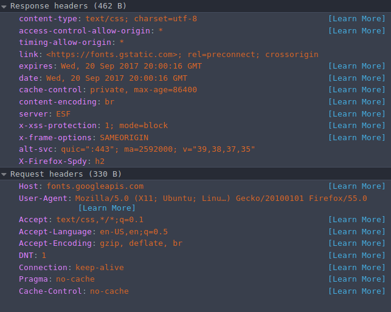

HTTP
About it:
The Hypertext Transfer Protocol (HTTP) is an application-level protocol for distributed, collaborative, hypermedia information systems. HTTP has been in use by the World-Wide Web global information initiative since 1990.
The HTTP protocol is a request/response protocol. A client sends a request to the server in the form of a request method, URI, and protocol version, followed by a MIME-like message containing request modifiers, client information, and possible body content over a connection with a server. The server responds with a status line, including the message's protocol version and a success or error code, followed by a MIME-like message containing server information, entity metainformation, and possible entity-body content.
URI
Uniform Resource Identifiers (URI) are simply formatted, case-insensitive string containing name, location, etc. to identify a resource, for example, a website, a web service, etc.
http://abc.com:80/~smith/home.html
MIME
Multipurpose Internet Mail Extension. The MIME type is the mechanism to tell the client the variety of document transmitted: the extension of a file name has no meaning on the web. It is, therefore, important that the server is correctly set up, so that the correct MIME type is transmitted with each document. Browsers often use the MIME-type to determine what default action to do when a resource is fetched.
Importance of setting the correct MIME type
Most web servers send unknown-type resources using the default application/octet-stream MIME type. For security reasons, most browsers do not allow setting a custom default action for such resources, forcing the user to store it to disk to use it. Some commonly seen incorrect server configurations happen with the following file types:
-
RAR-encoded files. In this case, the ideal would be to set the true type of the encoded files; this is often not possible (as it may not be known to the server and these files may contain several resources of different types). In this case, configuring the server to send the application/x-rar-compressed MIME type, users will not have defined a useful default action for them.
-
Proprietary file types. Pay particular attention when serving a proprietary file type. Avoid using application/octet-stream as special handling will not be possible: most browsers do not allow defining a default behavior (like "Opening in Word") for this generic MIME type.
MIME sniffing
In the absence of a MIME type, or in some other cases where a client believes they are incorrectly set, browsers may conduct MIME sniffing, which is guessing the correct MIME type by looking at the resource. Each browser performs this differently and under different circumstances. There are some security concerns with this practice, as some MIME types represent executable content and others not. Servers can block MIME sniffing.
HTTP Messages
HTTP is based on the client-server architecture model and a stateless request/response protocol that operates by exchanging messages across a reliable TCP/IP connection.
HTTP makes use of the Uniform Resource Identifier (URI) to identify a given resource and to establish a connection. Once the connection is established, HTTP messages are passed in a format similar to that used by the Internet mail [RFC5322] and the Multipurpose Internet Mail Extensions (MIME) [RFC2045]. These messages include requests from client to server and responses from server to client which will have the following format:
HTTP requests and HTTP responses use a generic message format of RFC 822 for transferring the required data. This generic message format consists of the following four items.
- start-line
- zero or more header fields (also known as "headers")
- an empty line (i.e., a line with nothing preceding the CRLF) indicating the end of the header fields
- and possibly a message-body
Message Start-Line
Syntax:
Examples:
Header Fields
HTTP header fields provide required information about the request or response, or about the object sent in the message body.
Example:
Requests
An HTTP client sends an HTTP request to a server in the form of a request message which includes the following:
- A Request-line
- Zero or more header (General|Request|Entity) fields followed by CRLF (Carriage Return and Line Feed)
- An empty line (i.e., a line with nothing preceding the CRLF) indicating the end of the header fields
- Optionally a message-body
Request Method
The request method indicates the method to be performed on the resource identified by the given Request-URI.
- GET - The GET method is used to retrieve information from the given server using a given URI. Requests using GET should only retrieve data and should have no other effect on the data.
- HEAD - Same as GET, but it transfers the status line and the header section only.
- POST - A POST request is used to send data to the server, for example, customer information, file upload, etc. using HTML forms.
- PUT - Replaces all the current representations of the target resource with the uploaded content.
- DELETE - Removes all the current representations of the target resource given by URI.
- CONNECT - Establishes a tunnel to the server identified by a given URI.
- TRACE - Performs a message loop back test along with the path to the target resource.
Responses
After receiving and interpreting a request message, a server responds with an HTTP response message:
- A Status-line
- An empty line (i.e., a line with nothing preceding the CRLF) indicating the end of the header fields
- Optionally a message-body
HTTP Status Codes
The Status-Code element in a server response, is a 3-digit integer where the first digit of the Status-Code defines the class of response and the last two digits do not have any categorization role. There are 5 values for the first digit:
- 2xx Success
- 3xx Redirection
- 4xx Client errors
- 5xx Server errors